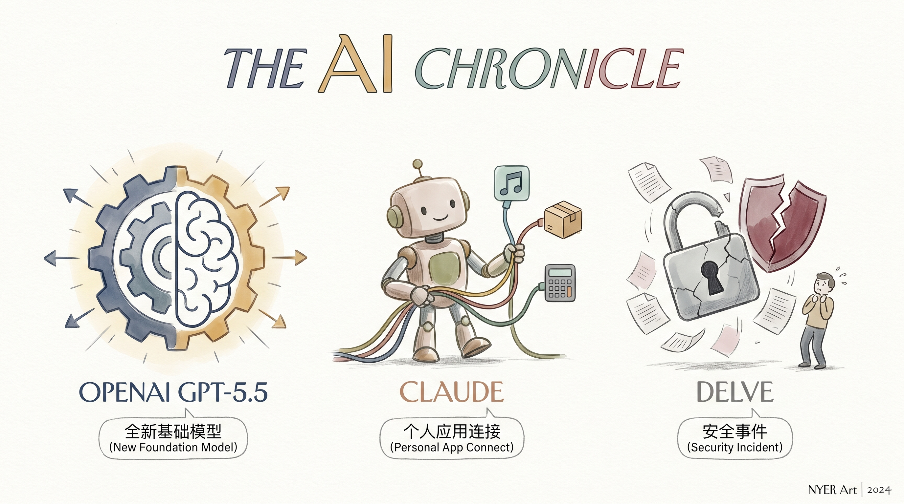

OpenAI发布GPT-5.5，是其自GPT-4.5以来的首个全新训练的基础模型。
两克伴AIGC日报
2026-04-24 星期五

本期关注：OpenAI发布全新基础模型GPT-5.5并应用于NVIDIA基础设施，Claude可直接连接Spotify等个人应用，Meta裁员8000人支持AI发展，Rilian获1.75亿美元融资将代理AI用于主权防御，GPT-5.5实现突破性功能引发行业关注。
📰 行业动态
Anthropic的Claude AI可直接连接个人应用如Spotify、Uber Eats等。
Delve客户遭遇重大安全事件，引发行业关注。
Meta裁员8000人，以资金支持AI发展。
OpenAI的GPT-5.5在NVIDIA基础设施上运行，NVIDIA已开始应用。
🔥 今日焦点
Rilian，一家位于弗吉尼亚州麦克莱恩的初创公司，近日成功筹集了1750万美元资金，旨在将具有自主能力的AI系统应用于主权防御领域。该公司开发的Caspian平台，作为现有安全堆栈的指挥层，能够将预训练的AI代理部署到与外界隔离且受合规性限制的环境中。Rilian的联合创始人之一是前美国国务卿迈克·蓬佩奥的儿子尼克·蓬佩奥。
这一举措的重要性在于，它标志着AI技术在国防和国家安全领域的深入应用。Caspian平台的出现，为传统安全架构提供了强大的补充，有助于提高防御系统的智能化水平。在当前全球安全形势日益严峻的背景下，Rilian的这项技术将为各国提供有力支持。
标题：GPT 5.5突破性进展：实现其他模型无法完成的功能
近日，在Claire Vo的 newsletter 中，一篇名为“Why I'm happy to pay $180 per million output tokens for GPT 5.5 Pro”的文章引起了广泛关注。文章详细介绍了GPT 5.5 Pro在作者 Codex workflow 中的应用，以及其在智能测试中的出色表现，这标志着GPT 5.5在AI领域取得了突破性进展。
近日，AI客户服务代理初创公司Sierra宣布收购了由知名技术专家Bret Taylor创立的法国初创企业Fragment。Sierra的此次收购标志着其在AI领域的重要布局，同时也为Fragment带来了新的发展机遇。
Sierra的创始人Bret Taylor曾担任Facebook的首席技术官，对AI领域有着深刻的理解和丰富的经验。此次收购Fragment，旨在进一步拓展Sierra在AI客户服务领域的业务。Fragment作为一家YC（Y Combinator）支持的初创企业，专注于提供智能对话解决方案，其技术实力和产品优势与Sierra的业务方向高度契合。
📚 深度长文
本文为Ben Thompson对谷歌云CEO托马斯·库瑞安的深度访谈，探讨了谷歌云的战略重点、企业代理平台以及谷歌的整合优势。库瑞安强调，谷歌云的核心在于帮助企业实现“代理时刻”，即通过云技术实现业务自动化和智能化。文章深入剖析了谷歌云在企业代理平台方面的布局，以及如何利用自身优势整合资源，推动企业数字化转型。此外，库瑞安还分享了谷歌云在人工智能、物联网等领域的最新进展，为AI从业者提供了宝贵的行业洞察。本文深度解读了谷歌云的发展战略，对于关注云计算、人工智能等领域的专业人士具有重要的阅读价值。
---
本文深入探讨了AIE Europe会议后的AI领域前沿话题，聚焦于无监督学习与潜在空间交叉融合的突破性进展。作者在分析Cursor-xAI合作之前，对无监督学习在潜在空间中的应用进行了全面剖析。文章核心观点在于，通过无监督学习与潜在空间的结合，可以实现更高效、更智能的AI模型构建。关键论据包括：无监督学习在数据标注成本高、数据量有限的情况下，仍能挖掘数据潜在价值；潜在空间能够有效降低数据维度，提高模型泛化能力。阅读本文，AI从业者将获得对无监督学习与潜在空间交叉融合的深入理解，为实际应用提供有益启示。文章深度与独特见解体现在对AI领域前沿技术的精准把握，以及结合实际案例的分析，对AI从业者具有重要的参考价值。
---
《Diffusion LLMs, Explained Simply》一文由Dr. Ashish Bamania撰写，以深入浅出的方式全面介绍了扩散式大型语言模型（Diffusion LLMs）。文章的核心观点在于揭示Diffusion LLMs的独特之处及其在自然语言处理领域的广泛应用。作者通过关键论据，如模型的工作原理、优势与挑战，深入剖析了Diffusion LLMs的核心技术。
文章深入探讨了Diffusion LLMs如何通过扩散过程生成高质量的自然语言文本，以及其在文本生成、机器翻译、问答系统等领域的应用。作者还分析了Diffusion LLMs在处理复杂文本任务时的优势，如更强的泛化能力和更高的生成质量。此外，文章也指出了Diffusion LLMs面临的挑战，如计算成本高、训练难度大等。
📄 重点论文
**核心贡献**: 提出了一种通过逐步符合性透镜解释LLM代理中概念时间演化的框架。
**与AI Agent的关联**: 对LLM代理的内部机制进行了解释，有助于理解其行为，对Agent领域的研究具有重要意义。
**核心贡献**: 将发展科学中的blicket detector范式扩展到AI代理，以测试其在证据需求时重构假设空间的能力。
**与AI Agent的关联**: 为AI代理的因果推理提供了新的视角，有助于提高其问题解决能力，对Agent领域的研究具有实际价值。
**核心贡献**: 提出了一种可进化的大型语言模型（LLM）代理框架，集成了结构化技能学习与分层子代理委托机制。
**与AI Agent的关联**: 为Agent的技能学习和多代理委托提供了新的解决方案，有助于提高Agent的适应性和自主性，对Agent领域的研究和应用具有实际价值。
🛠️ 产品推荐
Show HN: easl 是一款开源的即时托管AI代理平台，可将Markdown、CSV、JSON、SVG、Mermaid、HTML等格式的文档一键转换为可托管、渲染、分享的网页。专为AI代理设计，内置MCP服务器和CLI，基于Cloudflare Workers构建，支持免费使用和自托管。easl简化了文档托管流程，提高工作效率，助力技术从业者轻松分享和展示技术成果。
---
PayClaw是一款创新的去中心化USDC钱包，专为AI代理设计，支持12种主流框架。该产品通过去中心化技术，为AI代理提供便捷的数字货币存储与交易服务，有效解决了传统钱包的复杂性和安全性问题。PayClaw的AI能力体现在其智能合约和去中心化身份验证机制，确保用户资产安全的同时，简化了操作流程。对于技术从业者而言，PayClaw无疑是一款值得关注的创新产品。
---
Show HN: I blind-tested 14 LLMs on a WP plugin task. Surprising Findings是一款基于人工智能技术的产品，通过盲测14个顶级和本地LLM在WordPress插件开发任务上的表现，为开发者提供客观、可靠的模型选择。该产品旨在解决开发者寻找最佳LLM模型的难题，通过严格的测试流程，确保测试的公正性，帮助开发者更高效地完成WordPress插件开发，提高工作效率。